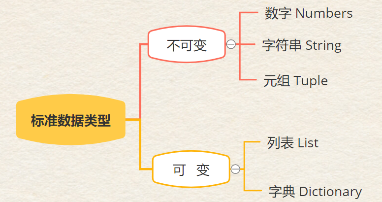
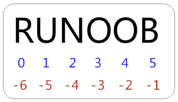
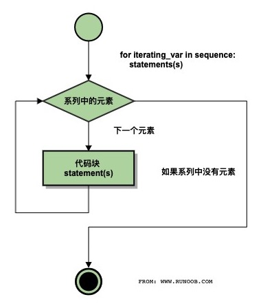
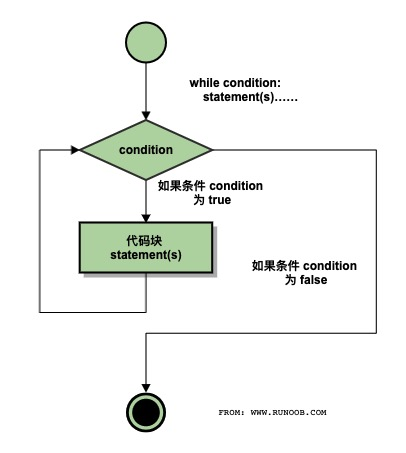
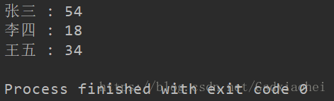

Python
注：
[]表示 可选参数 参考文献：菜鸟教程
简介
- Python 是一种解释型语言： 这意味着开发过程中没有了编译这个环节。
- Python 不和 C 一样，它没有编译器，只有解释器（解释器在运行时转换（为二进制代码）；编译器提前转换）
- Python 是交互式语言： 这意味着，您可以在一个 Python 提示符 >>> 后直接执行代码。
- Python 是面向对象语言
在 VS code 中配置 python
一、下载python
这里我使用 homebrew 下载
二、下载扩展
在 VS code 中下载微软官方的 python 扩展
三、配置实用工具
1、语法提示，配置 flake8
- 使用 pip 安装 flake8
pip install flake8
- 在settings.json文件中输入
"python.linting.flake8Enabled": true
注意：当前 VS code 已经不需要这个工具了，直接使用 VS code 自带插件即可
2、自动格式化代码
- Yapf 是谷歌开源的一个用于格式化 Python 代码的工具
- 使用 pip 安装 Yapf
pip install yapf
- 在settings.json文件中输入
"python.formatting.provider": "yapf"
注意：在 2023 年，我们已经不需要使用 yapf 格式化，更新的方式是使用 Black Formatter 插件：
在settings.json文件中添加以下代码，请确保与其他配置项之间使用逗号进行分隔。
"[python]": {
"editor.defaultFormatter": "ms-python.black-formatter",
"editor.formatOnSave": true
},
编程方式
python 有两种编写代码的方式（类似 shell 语言）：
1、交互式编程
- 交互式编程不需要创建脚本文件，是通过 Python 解释器的交互模式进来编写代码。
- 即直接在 shell 中 输入 python(3)，在 >>> 之后编写 python 代码
2、脚本式编程
- 通过脚本参数调用解释器开始执行脚本，直到脚本执行完毕。
- 当脚本执行完成后，解释器不再有效。所有 Python 脚本文件将以 .py 为扩展名。
执行:
方法一：
在设置 python 解释器的 PATH 变量之后，使用以下命令执行脚本：
$ python test.py
- 此命令用来告诉 shell 用什么东西来解释 python 脚本
方法二：
修改 test.py 文件，如下所示：
#!/usr/bin/python
print ("Hello, Python!")
- 第一行是你的 python 解释器的路径
使用以下命令执行脚本：
$ chmod +x test.py # 脚本文件添加可执行权限
$ ./test.py
面向对象
- 类（Class）： 用来描述具有相同的属性和方法的对象的集合。它定义了该集合中每个对象所共有的属性和方法。
- 方法： 类中定义的函数。
- 属性： 类（不是实例对象） 中所有的变量、？统称为 类的属性。
- 对象： 通过
类定义的实例。对象包括两个数据成员（类变量和实例变量）和方法。 - 实例： 对象 是 类的实例。等价于 对象
对象/实例 = 类 > 属性 > 方法
类
创建类
使用 class 语句来创建一个新类
语法：
class ClassName:
'类的帮助信息' #类文档字符串
class_suite #类体
- 类的帮助信息可以通过
ClassName.__doc__查看。 - class_suite 由类成员，方法，数据属性组成。
例：
^e49f2a
#!/usr/bin/python
# -*- coding: UTF-8 -*-
class Employee:
'所有员工的基类'
empCount = 0
def __init__(self, name, salary):
self.name = name
self.salary = salary
Employee.empCount += 1
def displayCount(self):
print "Total Employee %d" % Employee.empCount
def displayEmployee(self):
print "Name : ", self.name, ", Salary: ", self.salary
- 构造方法：定义类时必须先定义
__init__()方法，它是一种特殊的方法，被称为类的 构造方法 或 初始化方法，当创建了这个类的实例时就会调用该方法。 ^55ef55 empCount变量是一个类变量，它的值将在这个类的所有实例之间共享。你可以在内部类或外部类使用Employee.empCount访问。self代表类的实例，self在定义类的方法时是必须有的，虽然在调用时不必传入相应的参数。
self 参数
- self 代表类的实例，而非类
类的方法 与 普通的函数 只有一个特别的区别：它们必须有一个额外的第一个参数，按照惯例它的名称是 self。（表示 实例化后 实例的名字）
- self 是 类 的 实例，代表当前 对象（实例） 的地址。（python 规定）
- 在调用 类的实例 时不需要传入相关的参数；但在调用 类 时需要以类名作为参数传入。
如：
class Test:
def prt(self):
print(self)
print(self.__class__)
t = Test()
t.prt()
输出：
<__main__.Test instance at 0x10d066878>
__main__.Test
- 从执行结果可以很明显的看出，
self代表的是类的实例，代表当前对象的地址，而self.__class__则指向类。 - self 不是 python 关键字，我们把他换成 runoob 也是可以正常执行的。
类的继承
- 面向对象的编程带来的主要好处之一是代码的重用，实现这种重用的方法之一是通过继承机制。
- 通过继承创建的新类称为子类或派生类，被继承的类称为基类、父类或超类。
语法：
class 派生类名(基类名)
...
即：
class SubClassName (ParentClass1[, ParentClass2, ...]):
...
- 如果在继承元组中列了一个以上的类，那么它就被称作"多重继承" 。
在 python 中 继承 的一些特点：
- 如果在子类中需要父类的
构造方法就需要显式的调用父类的构造方法，或者不重写父类的构造方法。详细说明可查看： python 子类继承父类构造函数说明。 - 在调用父类的方法时，需要加上父类的类名前缀，且需要带上 self 参数变量。区别在于类中调用普通方法时并不需要带上 self 参数。
- Python 总是首先查找子类的方法，如果它不能在子类中找到对应的方法，它才开始到父类中逐个查找。（先在本类中查找调用的方法，找不到才去父类中找）。
例：
#!/usr/bin/python
# -*- coding: UTF-8 -*-
class Parent: # 定义父类
parentAttr = 100
def __init__(self):
print "调用父类构造函数"
def parentMethod(self):
print '调用父类方法'
def setAttr(self, attr):
Parent.parentAttr = attr
def getAttr(self):
print "父类属性 :", Parent.parentAttr
class Child(Parent): # 定义子类
def __init__(self):
print "调用子类构造方法"
def childMethod(self):
print '调用子类方法'
c = Child() # 实例化子类
c.childMethod() # 调用子类的方法
c.parentMethod() # 调用父类方法
c.setAttr(200) # 再次调用父类的方法 - 设置属性值
c.getAttr() # 再次调用父类的方法 - 获取属性值
继承多个类
class A: # 定义类 A
.....
class B: # 定义类 B
.....
class C(A, B): # 继承类 A 和 B
.....
检测函数
- 检测子类：
issubclass()布尔函数判断一个类是另一个类的子类或者子孙类，语法：issubclass(sub,sup) - 检测实例对象：
isinstance(obj, Class)布尔函数如果 obj 是 Class 类的实例对象或者是一个 Class 子类的实例对象则返回true。
实例
创建（类的）实例
实例化类其他编程语言中一般用关键字 new，但是在 Python 中并没有这个关键字，类的实例化类似函数调用方式。
python 使用类的名称 Employee 来实例化，并通过类定义中的 __init__ 方法 接收参数。
以上例为前提：
"创建 Employee 类的第一个对象"
emp1 = Employee("Zara", 2000)
"创建 Employee 类的第二个对象"
emp2 = Employee("Manni", 5000)
访问
您可以使用点号 . 来访问对象的属性。使用 类的名称 访问类变量：
emp1.displayEmployee()
emp2.displayEmployee()
print "Total Employee %d" % Employee.empCount
- emp1 是 类 Employee 的 实例
- emp1 和 Employee 是并列关系
输出：
Name : Zara ,Salary: 2000
Name : Manni ,Salary: 5000
Total Employee 2
方法
使用 def 关键字可以为类定义一个方法，与一般函数定义不同，类方法必须包含参数 self，且为第一个参数。（调用时自动将当前实例名作为参数传入，或者说 调用时自动将 self 视为 当前实例的名称）
定义类的私有方法：
__private_method：两个下划线开头，声明该方法为私有方法，不能在类的外部调用。在类的内部调用 self.__private_methods。
方法重写
如果你的父类方法的功能不能满足你的需求，你可以在子类重写你父类的方法：
#!/usr/bin/python
# -*- coding: UTF-8 -*-
class Parent: # 定义父类
def myMethod(self):
print '调用父类方法'
class Child(Parent): # 定义子类
def myMethod(self):
print '调用子类方法'
c = Child() # 子类实例
c.myMethod() # 子类调用重写方法
属性
类体 中的 变量 就是 属性。
分类
属性分为：类的属性 和 实例的属性
- 类的属性在 class 语句后定义
- 实例的属性在
def __init__(self)的方法中定义
实例的属性
如 exampleName.__class__ 代表当前类的地址
类的属性
类的私有属性：
__private_attrs：两个下划线开头，声明该属性为私有，不能在类的外部被使用或直接访问。在类内部的方法中使用时 self.__private_attrs。
例：
#!/usr/bin/python
# -*- coding: UTF-8 -*-
class JustCounter:
__secretCount = 0 # 私有变量
publicCount = 0 # 公开变量
def count(self):
self.__secretCount += 1
self.publicCount += 1
print self.__secretCount
counter = JustCounter()
counter.count()
counter.count()
print counter.publicCount
print counter.__secretCount # 报错，实例不能访问私有变量
输出：
1
2
2
Traceback (most recent call last):
File "test.py", line 17, in <module>
print counter.__secretCount # 报错，实例不能访问私有变量
AttributeError: JustCounter instance has no attribute '__secretCount'
Python 不允许 实例化的类 访问私有数据，但你可以使用 object._className__attrName（ 对象名._类名__私有属性名 ）访问属性，参考以下实例：
#!/usr/bin/python
# -*- coding: UTF-8 -*-
class Runoob:
__site = "www.runoob.com"
runoob = Runoob()
print runoob._Runoob__site
输出：
www.runoob.com
Python 的内置类属性
类 的 属性。而不是 实例 的 属性。
__dict__：类的属性（包含一个字典，由类的数据属性组成）__doc__：类的文档字符串__name__：类名__module__：类定义所在的模块（类的全名是__main__.className，如果类位于一个导入模块mymod中，那么className.__module__等于mymod）__bases__：类的所有父类构成元素（包含了一个由所有父类组成的元组）
例：
#!/usr/bin/python
# -*- coding: UTF-8 -*-
class Employee:
'所有员工的基类'
empCount = 0
def __init__(self, name, salary):
self.name = name
self.salary = salary
Employee.empCount += 1
def displayCount(self):
print "Total Employee %d" % Employee.empCount
def displayEmployee(self):
print "Name : ", self.name, ", Salary: ", self.salary
print "Employee.__doc__:", Employee.__doc__
print "Employee.__name__:", Employee.__name__
print "Employee.__module__:", Employee.__module__
print "Employee.__bases__:", Employee.__bases__
print "Employee.__dict__:", Employee.__dict__
输出：
Employee.__doc__: 所有员工的基类
Employee.__name__: Employee
Employee.__module__: __main__
Employee.__bases__: ()
Employee.__dict__: {'__module__': '__main__', 'displayCount': <function displayCount at 0x10a939c80>, 'empCount': 0, 'displayEmployee': <function displayEmployee at 0x10a93caa0>, '__doc__': '\xe6\x89\x80\xe6\x9c\x89\xe5\x91\x98\xe5\xb7\xa5\xe7\x9a\x84\xe5\x9f\xba\xe7\xb1\xbb', '__init__': <function __init__ at 0x10a939578>}
注
单下划线、双下划线、头尾双下划线说明
__foo__: 定义的是特殊方法，一般是系统定义名字 ，类似__init__()之类的。_foo: 以单下划线开头的表示的是 保护（protected）变量，即只允许其本身与子类进行访问，不能用于 from module import *__foo: 双下划线的表示的是 私有（private）变量，只允许这个类本身进行访问。
其它基本概念
- 实例化： 创建一个 类的实例（类的具体对象）。
- 类变量： 类变量在整个实例化的对象中是公用的。类变量定义在类中且在函数体之外。类变量通常不作为实例变量使用。
- 实例变量： 在类的声明中，属性是用变量来表示的。这种变量就称为实例变量，是在类声明的内部但是在类的其他成员方法之外声明的。
- 数据成员： 类变量或者实例变量，用于处理类及其实例对象的相关的数据。
- 局部变量： 定义在方法中的变量，只作用于当前实例的类。
类 和 实例（对象） 的关系相当于 C 中 结构类型 和 结构变量 的关系（区分 类 和 实例）
语法
标识符
- 在 Python 中，标识符由字母、数字、下划线组成。注意：标识符不能以数字开头；标识符区分大小写。
- 在 Python 中，以下划线开头的标识符是有特殊意义的。如：
以单下划线开头 _foo 的代表不能直接访问的类属性，需通过类提供的接口进行访问，不能用 from xxx import 而导入。
以双下划线开头的 __foo 代表类的私有成员，以双下划线开头和结尾的 __foo__ 代表 Python 里特殊方法专用的标识，如 __init__() 代表类的构造函数。
- Python 可以同一行显示多条语句，方法是用分号
;分开
Python 的保留字符
下面的列表显示了在Python中的保留字。这些保留字不能用作常数或变数，或任何其他标识符名称。
所有 Python 的关键字只包含小写字母。

行和缩进
Python 的代码块不使用大括号 {} 来控制类，函数以及其他逻辑判断。Python 最具特色的就是用缩进来写模块。
Python 中的缩进十分严格，使用 四个空格 或 一个 tab 键 来进行缩进。注意缩进方式不能混用
多行语句
Python语句中一般以新行作为语句的结束符。但是我们可以使用斜杠 \ 将一行的语句分为多行显示，如下所示：
total = item_one + \
item_two + \
item_three
注意：语句中包含 [], {} 或 () 括号就不需要使用多行连接符。如下实例：
days = ['Monday', Tuesday', 'Wednesday',
'Thursday', 'Friday']
引号
使用引号 ' 、双引号 " 、三引号 ''' 或 """ 来表示字符串
- 其中三引号可以由多行组成，是编写多行文本的快捷语法，常用于文档字符串，在文件的特定地点，被当做注释。
word = 'word'
sentence = "这是一个句子。"
paragraph = """这是一个段落。
包含了多个语句"""
注释
python中单行注释采用 # 开头。
python 中多行注释使用三个单引号 ''' 或三个双引号 """。
#!/usr/bin/python
# -*- coding: UTF-8 -*-
# 文件名：test.py
'''
这是多行注释，使用单引号。
这是多行注释，使用单引号。
这是多行注释，使用单引号。
'''
"""
这是多行注释，使用双引号。
这是多行注释，使用双引号。
这是多行注释，使用双引号。
"""
空行
- 函数之间或类的方法之间用空行分隔，表示一段新的代码的开始。
- 类和函数入口之间也用一行空行分隔，以突出函数入口的开始。
空行并不是Python语法的一部分。空行的作用在于分隔两段不同功能或含义的代码，便于日后代码的维护或重构。
记住：空行也是程序代码的一部分。
对象
python 中，一切皆是对象
在 python 中，类型属于对象，变量是没有类型的：
a=[1,2,3]
a="Runoob"
- 以上代码中，
[1,2,3]是 List 类型，"Runoob"是 String 类型，而变量 a 是没有类型，它仅仅是一个对象的引用（一个指针），可以是 List 类型对象，也可以指向 String 类型对象。
可更改（mutable）与不可更改（immutable）对象
strings, tuples, 和 numbers 是不可更改的对象，而 list, dict 等则是可以修改的对象。
- 不可变类型：变量赋值
a=5后再赋值a=10，这里实际是新生成一个 int 值对象 10，再让 a 指向它，而 5 被丢弃，不是改变a的值，相当于新生成了a。 - 可变类型：变量赋值
la=[1,2,3,4]后再赋值la[2]=5则是将 list la 的第三个元素值更改，本身la没有动，只是其内部的一部分值被修改了。
变量
变量是拥有匹配对象的名字（标识符）。
命名空间是一个包含了变量名称们（键）和它们各自相应的对象们（值）的字典。
- Python 中的变量赋值不需要类型声明。
- 每个变量在使用前都必须赋值，变量赋值以后该变量才会被创建。
如：
#!/usr/bin/python
# -*- coding: UTF-8 -*-
counter = 100 # 赋值整型变量
miles = 1000.0 # 浮点型
name = "John" # 字符串
print counter
print miles
print name
Python允许你同时为多个变量赋值：
a = b = c = 1
也可以为多个对象指定多个变量：
a, b, c = 1, 2, "john"
变量作用域
变量的访问权限决定于这个变量是在哪里赋值的。
两种最基本的变量作用域如下：
- 全局变量
- 局部变量
全局变量和局部变量
定义在函数内部的变量拥有一个局部作用域，定义在函数外的拥有全局作用域。
- 局部变量只能在其被声明的函数内部访问，而全局变量可以在整个程序范围内访问。
- 如果一个局部变量和一个全局变量重名，则局部变量会覆盖全局变量。
例：
#!/usr/bin/python
# -*- coding: UTF-8 -*-
total = 0 # 这是一个全局变量
# 可写函数说明
def sum( arg1, arg2 ):
#返回2个参数的和."
total = arg1 + arg2 # total在这里是局部变量.
print "函数内是局部变量 : ", total
# return total
#调用sum函数
sum( 10, 20 )
print "函数外是全局变量 : ", total
输出：
函数内是局部变量 : 30
函数外是全局变量 : 0
global 语句
Python 会智能地猜测一个变量是局部的还是全局的，它假设任何在函数内赋值的变量都是局部的。
因此，如果要给函数内的全局变量赋值，必须使用 global 语句。
语法：
global VarName
- global VarName 的表达式会告诉 Python， VarName 是一个全局变量，这样 Python 就不会在局部命名空间里寻找这个变量了。
例：
#!/usr/bin/python
# -*- coding: UTF-8 -*-
Money = 2000
def AddMoney():
# 想改正代码就取消以下注释:
# global Money
Money = Money + 1
print Money
AddMoney()
print Money
数据类型
Python有五个标准的数据类型：
- Numbers（数字）
- String（字符串）
- List（列表）
- Tuple（元组）
- Dictionary（字典）
字符串、列表、元组、字典、集合都属于 序列
数据类型有可更改和不可更改之分：

- 当对象的值发生变化，但内存地址没有改变时，则说明是可变类型
- 当对象的值发生变化，内存地址也发生改变时，则说明是不可变类型
数字（numbers）
数字是不可改变的数据类型，这意味着改变数字数据类型会分配一个新的对象。
Python支持四种不同的数字类型：
- int（有符号整型）
- long（长整型，也可以代表八进制和十六进制）
- float（浮点型）
- complex（复数）
注意：long 类型只存在于 Python2.X 版本中，在 2.2 以后的版本中，int 类型数据溢出后会自动转为long类型。在 Python3.X 版本中 long 类型被移除，使用 int 替代。
如：

- Python使用 L 来显示长整型。
- 复数由实数部分和虚数部分构成，可以用 a + bj,或者 complex(a,b) 表示， 复数的实部 a 和虚部 b 都是浮点型。
number 类型转换
int(x [,base ]) 将x转换为一个整数
long(x [,base ]) 将x转换为一个长整数
float(x ) 将x转换到一个浮点数
complex(real [,imag ]) 创建一个复数
str(x ) 将对象 x 转换为字符串
repr(x ) 将对象 x 转换为表达式字符串
eval(str ) 用来计算在字符串中的有效Python表达式,并返回一个对象
tuple(s ) 将序列 s 转换为一个元组
list(s ) 将序列 s 转换为一个列表
chr(x ) 将一个整数转换为一个字符
unichr(x ) 将一个整数转换为Unicode字符
ord(x ) 将一个字符转换为它的整数值
hex(x ) 将一个整数转换为一个十六进制字符串
oct(x ) 将一个整数转换为一个八进制字符串
math 模块、cmath 模块
- math 模块包含对浮点数运算的函数。
- cmath 模块包含对复数运算的函数。
- cmath 模块的函数跟 math 模块函数基本一致。
math/cmath 模块中的函数
- 数学函数：

- 随机数函数：

- 三角函数

例：
>>> import cmath
>>> cmath.sqrt(-1)
1j
>>> cmath.sqrt(9)
(3+0j)
>>> cmath.sin(1)
(0.8414709848078965+0j)
>>> cmath.log10(100)
(2+0j)
>>>
python 中的数学常量

字符串（strings）
Python 不支持单字符类型，单字符在 Python 中也是作为一个字符串使用。
python的字串列表有2种取值顺序:
- 从左到右索引默认0开始的，最大范围是字符串长度少1
- 从右到左索引默认-1开始的，最大范围是字符串开头

注意：Python 字符串的下标从 0 开始
创建字符串
- 使用
'或"来创建字符串 - 使用
'''来创建带有格式（如多行）的字符串
截取字符串
可以使用 [头下标:尾下标] 来截取相应的字符串，可以是正数或负数，下标可以为空表示取到头或尾：
>>> s = "abcdef"
>>> s[1:5]
"bcde"
[1:5]对应截取字符串的第 2 到 5 个字符（第 6 个不截取）
例：
#!/usr/bin/python
# -*- coding: UTF-8 -*-
str = "Hello World!"
print str # 输出完整字符串
print str[0] # 输出字符串中的第一个字符
print str[2:5] # 输出字符串中第三个至第六个之间的字符串
print str[2:] # 输出从第三个字符开始的字符串
print str * 2 # 输出字符串两次
print str + "TEST" # 输出连接的字符串
字符串运算符
下表实例变量 a 值为字符串 "Hello"，b 变量值为 "Python"：

字符串格式化
字符串格式化符号：

格式化操作符辅助指令：

例：
#!/usr/bin/python
print "My name is %s and weight is %d kg!" % ('Zara', 21)
输出：
My name is Zara and weight is 21 kg!
在 python 中，我们一般不使用格式化的方式输出内容，而是使用直接写 变量名称 或 常量 （用 , 隔开）的方式进行输出
转义字符
在需要在字符中使用特殊字符时，python 用反斜杠 \ 转义字符。如下表：

三引号
三引号让程序员从引号和特殊字符串的泥潭里面解脱出来，自始至终保持一小块字符串的格式是所谓的WYSIWYG（所见即所得）格式的。
''' 或 """
例：
>>> hi = '''hi
there'''
# >>> hi # repr()
# 'hi\nthere'
>>> print hi # str()
hi
there
Unicode 字符串
Python 中定义一个 Unicode 字符串和定义一个普通字符串一样简单：
>>> u"Hello World !"
u"Hello World !"
引号前小写的"u"表示这里创建的是一个 Unicode 字符串。如果你想加入一个特殊字符，可以使用 Python 的 Unicode-Escape 编码。如下例所示：
>>> u"Hello\u0020World !"
u"Hello World !"
被替换的 \u0020 标识表示在给定位置插入编码值为 0x0020 的 Unicode 字符（空格符）。
内建字符串方法
关于字符串的方法（函数）都在 string 模块中
使用时别忘了使用 import 导入 string 模块
元组（tuples）
- 元组与列表非常相似，区别只有元组不可更改而列表可以更改（二次赋值）。
- 元组使用小括号，列表使用方括号。
创建元组
- 使用
()引出元组
创建空元组：
tup1 = ()
元组中只包含一个元素时，需要在元素后面添加逗号：
tup1 = (50,)
元组与字符串类似，下标索引从0开始，可以进行截取，组合等。
访问元组
因为元组也是一个序列，所以我们可以访问元组中的指定位置的元素，也可以截取索引中的一段元素

元组可以使用下标索引来访问元组中的值
如：
#!/usr/bin/python
tup1 = ("physics", "chemistry", 1997, 2000)
tup2 = (1, 2, 3, 4, 5, 6, 7 )
print "tup1[0]: ", tup1[0]
print "tup2[1:5]: ", tup2[1:5]
输出：
tup1[0]: physics
tup2[1:5]: (2, 3, 4, 5)
操作元组
- 元组中的元素值是不允许修改的
连接元组：
如：
#!/usr/bin/python
# -*- coding: UTF-8 -*-
tup1 = (12, 34.56)
tup2 = ("abc", "xyz")
# 以下修改元组元素操作是非法的。
# tup1[0] = 100
# 创建一个新的元组
tup3 = tup1 + tup2
print tup3
删除整个元组
- 使用 del 语句
如：
#!/usr/bin/python
tup = ("physics", "chemistry", 1997, 2000)
print tup
del tup
print "After deleting tup : "
print tup
输出（报错）：
("physics", "chemistry", 1997, 2000)
After deleting tup :
Traceback (most recent call last):
File "test.py", line 9, in <module>
print tup
NameError: name 'tup' is not defined
元组运算符
运算后会生成一个新的元组。

元组内建函数

列表（list）
最常用
创建列表
- 使用
[]引出列表。 - 列表元素可以是字符，数字，字符串甚至可以包含列表（即嵌套）。
例：
list1 = ["physics", "chemistry", 1997, 2000]
list2 = [1, 2, 3, 4, 5 ]
list3 = ["a", "b", "c", "d"]
访问列表

- 相比于字符串，Python 列表截取可以接收第三个参数，参数作用是截取的步长（步长为 2 即间隔一个位置）。
例：
#!/usr/bin/python
list1 = ["physics", "chemistry", 1997, 2000]
list2 = [1, 2, 3, 4, 5, 6, 7 ]
print "list1[0]: ", list1[0]
print "list2[1:5]: ", list2[1:5]
输出：
list1[0]: physics
list2[1:5]: [2, 3, 4, 5]
例：
>>>L = ["Google", "Runoob", "Taobao"]
>>> L[2]
"Taobao"
>>> L[-2]
"Runoob"
>>> L[1:]
["Runoob", "Taobao"]
>>>
操作列表
修改列表元素
- 列表与元组不同，列表可修改，而元组不可修改
使用 append() 方法来添加列表项：
#!/usr/bin/python
# -*- coding: UTF-8 -*-
list = [] ## 空列表
list.append("Google") ## 使用 append() 添加元素
list.append("Runoob")
print list
删除列表元素
使用 del 语句来删除列表的元素：
#!/usr/bin/python
list1 = ["physics", "chemistry", 1997, 2000]
print list1
del list1[2]
print "After deleting value at index 2 : "
print list1
输出：
["physics", "chemistry", 1997, 2000]
After deleting value at index 2 :
["physics", "chemistry", 2000]
列表运算符
列表对 + 和 * 的操作符与字符串相似。+ 号用于组合列表，* 号用于重复列表。
其它运算符（与元组相同）：

如：
#!/usr/bin/python
# -*- coding: UTF-8 -*-
list = [ "runoob", 786 , 2.23, "john", 70.2 ]
tinylist = [123, "john"]
print list # 输出完整列表
print tinylist * 2 # 输出列表两次
print list + tinylist # 打印组合的列表
列表内建方法和函数
字典（dict）
列表是有序的对象集合，字典是无序的对象集合。两者之间的区别在于：字典当中的元素是通过键（key）来存取的，而不是通过偏移存取。
- 字典用
{ }标识。字典由 索引(key) 和它对应的 值(value) 组成。 - 键 一般是唯一的，如果重复最后的一个 键值对 会替换前面的，值 不需要唯一。
- 值可以取任何数据类型，但键必须是不可变的，如字符串，数字或元组。
创建字典
例：
tinydict1 = { "abc": 456 }
tinydict2 = { "abc": 123, 98.6: 37 }
访问字典
- 把相应的键放入
[]
例：
#!/usr/bin/python
tinydict = {"Name": "Zara", "Age": 7, "Class": "First"}
print "tinydict['Name']: ", tinydict['Name']
print "tinydict['Age']: ", tinydict['Age']
输出：
tinydict['Name']: Zara
tinydict['Age']: 7
操作字典
修改和添加元素
例：
#!/usr/bin/python
# -*- coding: UTF-8 -*-
tinydict = {'Name': 'Zara', 'Age': 7, 'Class': 'First'}
tinydict['Age'] = 8 # 更新
tinydict['School'] = "RUNOOB" # 添加
print "tinydict['Age']: ", tinydict['Age']
print "tinydict['School']: ", tinydict['School']
输出：
tinydict['Age']: 8
tinydict['School']: RUNOOB
删除元素
- 删除单一元素
- 清空字典内容
- 删除字典（del 命令）
例：
#!/usr/bin/python
# -*- coding: UTF-8 -*-
tinydict = {'Name': 'Zara', 'Age': 7, 'Class': 'First'}
del tinydict['Name'] # 删除键是'Name'的条目
tinydict.clear() # 清空字典所有条目
del tinydict # 删除字典
print "tinydict['Age']: ", tinydict['Age']
print "tinydict['School']: ", tinydict['School']
但这会引发一个异常，因为用del后字典不再存在：
tinydict['Age']:
Traceback (most recent call last):
File "test.py", line 10, in <module>
print "tinydict['Age']: ", tinydict['Age']
NameError: name 'tinydict' is not defined
字典特性
- 字典 值 可以没有限制地取任何 python 对象，既可以是标准的对象，也可以是用户定义的，但 键 不行。
- 不允许同一个键出现两次。创建时如果同一个键被赋值两次，后一个值会被记住，如下实例：
#!/usr/bin/python
tinydict = {'Name': 'Runoob', 'Age': 7, 'Name': 'Manni'}
print "tinydict['Name']: ", tinydict['Name']
输出：
tinydict['Name']: Manni
- 键必须不可变，所以可以用数字，字符串或元组充当，所以用列表就不行，如下实例：
#!/usr/bin/python
tinydict = {['Name']: 'Zara', 'Age': 7}
# ['Name'] 是一个列表
print "tinydict['Name']: ", tinydict['Name']
输出（报错）：
Traceback (most recent call last):
File "test.py", line 3, in <module>
tinydict = {['Name']: 'Zara', 'Age': 7}
TypeError: unhashable type: 'list'
字典内置函数和方法
集合（set）
set 和 dict 类似，是一组 key 的集合，但不存储 value。由于 key 不能重复，所以在 set 中没有重复的 key。
- 使用
{}或set()创建集合。创建空集合时，只能用set() - set 是无序的，重复元素在 set 中自动被过滤
例：
set={"key1", "key2"}
创建集合
语法：
parame = {value01,value02,...}
或者
set(value)
例：
set1 = {1, 2, 3, 4} # 直接使用大括号创建集合
set2 = set([4, 5, 6, 7]) # 使用 set() 函数从列表创建集合
- 注意：创建一个空集合必须用 set() 而不是 { }，因为 { } 是用来创建一个空字典。
操作集合
添加元素
语法：
s.add( x )
- 将元素 x 添加到集合 s 中，如果元素已存在，则不进行任何操作。
移除元素
语法：
s.remove( x )
数据类型转换
以下几个内置的函数可以执行数据类型之间的转换。这些函数返回一个新的对象，表示转换的值。

运算符
算数运算符

比较运算符

赋值运算符

位运算符
假定 a = 60（00111100），b = 13（00001101）

逻辑运算符

成员运算符

测试实例中包含了一系列的成员，包括字符串，列表或元组：
#!/usr/bin/python
# -*- coding: UTF-8 -*-
a = 10
b = 20
list = [1, 2, 3, 4, 5 ];
if ( a in list ):
print "1 - 变量 a 在给定的列表中 list 中"
else:
print "1 - 变量 a 不在给定的列表中 list 中"
if ( b not in list ):
print "2 - 变量 b 不在给定的列表中 list 中"
else:
print "2 - 变量 b 在给定的列表中 list 中"
# 修改变量 a 的值
a = 2
if ( a in list ):
print "3 - 变量 a 在给定的列表中 list 中"
else:
print "3 - 变量 a 不在给定的列表中 list 中"
```
输出：
```zsh
1 - 变量 a 不在给定的列表中 list 中
2 - 变量 b 不在给定的列表中 list 中
3 - 变量 a 在给定的列表中 list 中
身份运算符

id()函数用于获取对象内存地址。- 同一个对象 即 同一内存空间
#!/usr/bin/python
# -*- coding: UTF-8 -*-
a = 20
b = 20
if ( a is b ):
print "1 - a 和 b 有相同的标识"
else:
print "1 - a 和 b 没有相同的标识"
if ( a is not b ):
print "2 - a 和 b 没有相同的标识"
else:
print "2 - a 和 b 有相同的标识"
# 修改变量 b 的值
b = 30
if ( a is b ):
print "3 - a 和 b 有相同的标识"
else:
print "3 - a 和 b 没有相同的标识"
if ( a is not b ):
print "4 - a 和 b 没有相同的标识"
else:
print "4 - a 和 b 有相同的标识"
```
输出：
```zsh
1 - a 和 b 有相同的标识
2 - a 和 b 有相同的标识
3 - a 和 b 没有相同的标识
4 - a 和 b 没有相同的标识
is 与 == 区别：is 用于判断两个变量引用对象是否为同一个(同一块内存空间)， == 用于判断引用变量的值是否相等。
运算符的优先级
以下表格列出了从最高到最低优先级的所有运算符：

if 语句
基本形式：
if 判断条件：
执行语句……
else：
执行语句……
当判断条件为多个值时，可以使用以下形式：
if 判断条件1:
执行语句1……
elif 判断条件2:
执行语句2……
elif 判断条件3:
执行语句3……
else:
执行语句4……
条件部分可以使用 or （或），表示两个条件有一个成立时判断条件成功；使用 and （与）时，表示只有两个条件同时成立的情况下，判断条件才成功。
简单的语句组（在同一行使用 if）：
#!/usr/bin/python
# -*- coding: UTF-8 -*-
var = 100
if ( var == 100 ) : print "变量 var 的值为100"
print "Good bye!"
循环语句

- python 中也有 break 和 continue 语句，用法与 c 相同
for 循环
for 循环 可以 迭代对象中的内容
流程图：

语法：
for iterating_var in sequence:
statements(s)
- for循环可以遍历任何序列的项目，如一个列表或者一个字符串。
- var 是 变量 的意思，
iterating_var就类似于 c 中的int i。 in之后的东西会被 for 循环遍历- 注意：for 语句后面有一个冒号
:
例：
for i in rang(5)
print(i)
- range返回一个序列的数。
输出：
0
1
2
3
4
python 的标准输出默认换行
或：
#!/usr/bin/python
# -*- coding: UTF-8 -*-
for letter in 'Python': # 第一个实例
print("当前字母: %s" % letter)
fruits = ['banana', 'apple', 'mango']
for fruit in fruits: # 第二个实例
print ('当前水果: %s'% fruit)
# 另外一种执行循环的遍历方式是通过索引，如下实例：
fruits = ['banana', 'apple', 'mango']
for index in range(len(fruits)): # 第三个实例
print ('当前水果 : %s' % fruits[index])
print ("Good bye!")
- 函数 len() 返回列表的长度，即元素的个数。
输出：
当前字母: P
当前字母: y
当前字母: t
当前字母: h
当前字母: o
当前字母: n
当前水果: banana
当前水果: apple
当前水果: mango
当前水果: banana
当前水果: apple
当前水果: mango
Good bye!
for 循环 列表生成式
标准方式 生成列表：
L = []
for x in range(1, 11):
L.append(x * x)
print(L)
[1, 4, 9, 16, 25, 36, 49, 64, 81, 100]
使用 列表生成式（for 后置）：
print([x * x for x in range(1, 11)])
[1, 4, 9, 16, 25, 36, 49, 64, 81, 100]
或
a = [0 for i in range(3)] # 这里 for 循环只表示将 前式 运行 range(3) 次
print(a)
[0, 0, 0]
在比如，生成二维列表：
res = [[0] * len(B[0]) for i in range(len(A))] # 这里 for 循环只表示将 前式 运行 range(len(A)) 次
[0, 0, 0, 0]
[0, 0, 0, 0]
甚至我们还可以在 列表生成式 中使用 if 后置：
print([x * x for x in range(1, 11) if x % 2 == 0])
[4, 16, 36, 64, 100]
- 这样我们就可以筛选出仅偶数的平方
列表生成式还可以 嵌套：
#列表生成式可以嵌套
#由两个列表a，b
a=[i for i in range(1,4)]#生成一个list a
print(a)
b=[i for i in range(100,400) if i%100==0]
print(b)
#列表生成式是可以嵌套的，相当于两个for循环的嵌套
c=[m+n for m in a for n in b]
print(c)
[1, 2, 3]
[100, 200, 300]
[101, 201, 301, 102, 202, 302, 103, 203, 303]
while 循环
流程图：

语法：
while 判断条件(condition)：
执行语句(statements)……
例：
#!/usr/bin/python
count = 0
while (count < 9):
print 'The count is:', count
count = count + 1
print "Good bye!"
简单语句组：
类似 if 语句的简单语句组
#!/usr/bin/python
flag = 1
while (flag): print 'Given flag is really true!'
print "Good bye!"
无限循环
#!/usr/bin/python
# -*- coding: UTF-8 -*-
var = 1
while var == 1 : # 该条件永远为true，循环将无限执行下去
num = raw_input("Enter a number :")
print "You entered: ", num
print "Good bye!"
- 注意：以上的无限循环你可以使用
CTRL+C来中断循环。
循环中的 else
在 python 中，for … else 表示这样的意思，for 中的语句和普通的没有区别，else 中的语句会在循环正常执行完（即 for 不是通过 break 跳出而中断的）的情况下执行，while … else 也是一样。
函数
定义函数
- 函数代码块以
def关键词开头，后接函数标识符名称和圆括号()。 - 任何传入参数和自变量必须放在圆括号中间。圆括号之间可以用于定义参数。
- 函数的第一行语句可以选择性地使用文档字符串—用于存放函数说明。
- 函数内容以冒号
:起始，并且缩进。 return [表达式]结束函数，选择性地返回一个值给调用方。不带表达式的 return 相当于返回 None。
语法：
def functionname( parameters ):
"函数_文档字符串"
function_suite
return [expression]
例：
def printme( str ):
"打印传入的字符串到标准显示设备上"
print str
return
调用函数
下例调用了上面定义的 printme 函数
#!/usr/bin/python
# -*- coding: UTF-8 -*-
# 定义函数
def printme( str ):
"打印任何传入的字符串"
print str
return
# 调用函数
printme("我要调用用户自定义函数!")
printme("再次调用同一函数")
参数传递
python 函数的参数传递：
- 不可变类型：类似 c++ 的值传递（c 中的传值调用），如 整数、字符串、元组。如
fun(a)，传递的只是 a 的值，没有影响 a 对象本身。比如在fun(a)内部修改 a 的值，只是修改另一个复制的对象，不会影响 a 本身。 - 可变类型：类似 c++ 的引用传递，如 列表，字典。如
fun(la)，则是将 la 真正的传过去，修改后 fun 外部的 la 也会受影响
python 中一切都是对象，严格意义我们不能说值传递还是引用传递，我们应该说传不可变对象和传可变对象。
例：
传不可变对象
#!/usr/bin/python
# -*- coding: UTF-8 -*-
def ChangeInt( a ):
a = 10
b = 2
ChangeInt(b)
print b # 结果是 2
- 实例中有 int 对象 2，指向它的变量是 b，在传递给 ChangeInt 函数时，按传值的方式复制了变量 b，a 和 b 都指向了同一个 Int 对象，在 a=10 时，则新生成一个 int 值对象 10，并让 a 指向它。
传可变对象
TODO
参数
以下是调用函数时可使用的正式参数类型：
- 必备参数
- 关键字参数
- 默认参数
- 不定长参数
必备参数
- 必备参数须以正确的顺序传入函数。
- 调用时的数量必须和声明时的一样。
#!/usr/bin/python
# -*- coding: UTF-8 -*-
#可写函数说明
def printme( str ):
"打印任何传入的字符串"
print str
return
#调用printme函数
#调用printme()函数，你必须传入一个参数，不然会出现语法错误：
printme()
关键字参数
关键字 即 有特殊含义的字符（串）
- 使用关键字参数允许函数调用时参数的顺序与声明时不一致，因为 Python 解释器能够用参数名匹配参数值。
例：
#!/usr/bin/python
# -*- coding: UTF-8 -*-
#可写函数说明
def printinfo( name, age ):
"打印任何传入的字符串"
print "Name: ", name
print "Age ", age
return
#调用printinfo函数
printinfo( age=50, name="miki" )
默认参数
- 定义函数时可以给出默认参数
- 调用函数时，默认参数的值如果没有传入，则被认为是默认值。
如：
#!/usr/bin/python
# -*- coding: UTF-8 -*-
#可写函数说明
def printinfo( name, age = 35 ):
"打印任何传入的字符串"
print "Name: ", name
print "Age ", age
return
#调用printinfo函数
printinfo( age=50, name="miki" )
printinfo( name="miki" )
输出
Name: miki
Age 50
Name: miki
Age 35
不定长参数
类似 shell 语言中的 $@
- 使一个函数能处理比当初声明时更多的参数。这些参数叫做不定长参数
- 不定长参数声明时不会命名。
语法：
def functionname([formal_args,] *var_args_tuple ):
"函数_文档字符串"
function_suite
return [expression]
- 加了星号
*的变量名会存放所有未命名的变量参数。 - args 的意思是 参数
- formal_args - 正常参数
- var_args_tuple - 不定长参数（元组）
例：
#!/usr/bin/python
# -*- coding: UTF-8 -*-
# 可写函数说明
def printinfo( arg1, *vartuple ):
"打印任何传入的参数"
print "输出: "
print arg1
for var in vartuple:
print var
return
# 调用printinfo 函数
printinfo( 10 )
printinfo( 70, 60, 50 )
输出
输出:
10
输出:
70
60
50
匿名函数
python 使用 lambda 来创建匿名函数。
- lambda只是一个表达式，函数体比def简单很多。
- lambda的主体是一个表达式，而不是一个代码块。仅仅能在lambda表达式中封装有限的逻辑进去。
- lambda函数拥有自己的命名空间，且不能访问自有参数列表之外或全局命名空间里的参数。
- 虽然lambda函数看起来只能写一行，却不等同于C或C++的内联函数，后者的目的是调用小函数时不占用栈内存从而增加运行效率。
语法：
#lambda函数的语法只包含一个语句，如下：
lambda [arg1 [,arg2,.....argn]]:expression
例：
#!/usr/bin/python
# -*- coding: UTF-8 -*-
# 可写函数说明
sum = lambda arg1, arg2: arg1 + arg2
# 调用sum函数
print "相加后的值为 : ", sum( 10, 20 )
print "相加后的值为 : ", sum( 20, 20 )
输出
相加后的值为 : 30
相加后的值为 : 40
模块（module）
Python 模块(Module)，是一个 Python 文件，以 .py 结尾，包含了 Python 对象定义和 Python 语句。即 以 .py 结尾的文件
- 模块让你能够有逻辑地组织你的 Python 代码段。
- 把相关的代码分配到一个模块里能让你的代码更好用，更易懂。
- 模块能定义函数，类和变量，模块里也能包含可执行的代码。
例：
support.py：
def print_func( par ):
print "Hello : ", par
return
1、引入模块
import 语句
语法：
import module1[, module2[,... moduleN]]
- 在文件头部写引用模块的语句
如：
#!/usr/bin/python
# -*- coding: UTF-8 -*-
# 导入模块
import support
注意：一个模块只会被导入一次，不管你执行了多少次 import。
from...import 语句
- Python 的 from 语句让你从模块中导入一个指定的部分到当前命名空间中。
语法：
from modname import name1[, name2[, ... nameN]]
例：
导入模块 fib 的 fibonacci 函数：
from fib import fibonacci
- 这个声明不会把整个 fib 模块导入到当前的命名空间中，它只会将 fib 里的 fibonacci 单个引入到执行这个声明的模块的全局符号表。
from...import* 语句
- 把一个模块的所有内容全都导入到当前的命名空间
from modname import *
- 导入一个模块中的所有项目
2、调用模块中的函数
语法：
模块名.函数名
如：
# 现在可以调用模块里包含的函数了
support.print_func("Runoob")
注：
搜索路径
当你导入一个模块，Python 解释器对模块位置的搜索顺序是：
- 当前目录
- shell 变量 PYTHONPATH 下的每个目录。
- 默认路径。UNIX下，默认路径一般为/usr/local/lib/python/。
模块搜索路径存储在 system 模块的 sys.path 变量中。变量里包含当前目录，PYTHONPATH 和由安装过程决定的默认目录。
PYTHONPATH 变量
- 作为环境变量，PYTHONPATH 由装在一个列表里的许多目录组成。
- PYTHONPATH 的语法和 shell 变量 PATH 的一样。
在 UNIX 系统，典型的 PYTHONPATH 如下：
set PYTHONPATH=/usr/local/lib/python
dir() 函数
dir()函数返回一个排好序的字符串列表，内容是一个模块里定义过的名字。- 返回的列表容纳了在一个模块里定义的所有模块，变量和函数。
例：
#!/usr/bin/python
# -*- coding: UTF-8 -*-
# 导入内置math模块
import math
content = dir(math)
print content;
输出：
['__doc__', '__file__', '__name__', 'acos', 'asin', 'atan',
'atan2', 'ceil', 'cos', 'cosh', 'degrees', 'e', 'exp',
'fabs', 'floor', 'fmod', 'frexp', 'hypot', 'ldexp', 'log',
'log10', 'modf', 'pi', 'pow', 'radians', 'sin', 'sinh',
'sqrt', 'tan', 'tanh']
模块的内建变量
这里的 __doc__, __file__, __name__ 都是 python 模块在创建之初自动加载的内建变量。
1、__name__ 指向模块的名字。
标识模块的名字，可以显示一个模块的某功能是被自己执行还是被别的文件调用执行。
假设模块 A、B，模块A自己定义了功能 C ，模块B调用模块 A ，现在功能 C 被执行了：
- 如果 C 被 A 自己执行，也就是说模块执行了自己定义的功能，那么
__name__=='__main__' - 如果 C 被 B 调用执行，也就是说当前模块调用执行了别的模块的功能，那么
__name__=='A'（被调用模块的名字）
应用：
写 main.py 模块时最后要写：
if __name__ == "__main__":
main()
2、__file__ 指向该模块的导入文件名。
globals() 和 locals() 函数
根据调用地方的不同，globals() 和 locals() 函数可被用来返回全局和局部命名空间里的名字。
- 如果在函数内部调用 locals()，返回的是所有能在该函数里访问的名字。
- 如果在函数内部调用 globals()，返回的是所有在该函数里能访问的全局名字。
- 两个函数的返回类型都是字典。所以名字们能用 keys() 函数摘取。
reload() 函数
当一个模块被导入到一个脚本，模块顶层部分的代码只会被执行一次。因此，如果你想重新执行模块里顶层部分的代码，可以用 reload() 函数。
- 该函数会重新导入之前导入过的模块。
语法：
reload(module_name)
- module_name 要直接放模块的名字，而不是一个字符串形式。
比如想重载 hello 模块，如下：
reload(hello)
包
包是一个分层次的文件目录结构，它定义了一个由模块及子包，和子包下的子包等组成的 Python 的应用环境。简单来说，包就是文件夹.
- 该文件夹下必须存在
__init__.py文件, 该文件的内容可以为空。（__init__.py用于标识当前文件夹是一个包。）
例：
考虑一个在 package_runoob 目录下的 runoob1.py、runoob2.py、__init__.py 文件，test.py 为测试调用包的代码，目录结构如下：
test.py
package_runoob
|-- __init__.py
|-- runoob1.py
|-- runoob2.py
源代码如下：
package_runoob/runoob1.py：
#!/usr/bin/python
# -*- coding: UTF-8 -*-
def runoob1():
print "I'm in runoob1"
package_runoob/runoob2.py：
#!/usr/bin/python
# -*- coding: UTF-8 -*-
def runoob2():
print "I'm in runoob2"
现在，在 package_runoob 目录下创建 __init__.py：
package_runoob/__init__.py：
#!/usr/bin/python
# -*- coding: UTF-8 -*-
if __name__ == '__main__':
print '作为主程序运行'
else:
print 'package_runoob 初始化'
然后我们在 package_runoob 同级目录下创建 test.py 来调用 package_runoob 包
test.py：
#!/usr/bin/python
# -*- coding: UTF-8 -*-
# 导入 Phone 包
from package_runoob.runoob1 import runoob1
from package_runoob.runoob2 import runoob2
runoob1()
runoob2()
输出：
package_runoob 初始化
I'm in runoob1
I'm in runoob2
如上，为了举例，我们只在每个文件里放置了一个函数，但其实你可以放置许多函数。你也可以在这些文件里定义Python的类，然后为这些类建一个包。
文件 I / O
输出
print() 函数
- 此函数把你传递的表达式转换成一个字符串表达式，并将结果写到标准输出。
输入
Python提供了两个内置函数从标准输入读入一行文本，默认的标准输入是键盘。如下：
- raw_input
- input
raw_input() 函数
- 从标准输入读取一个行，并返回一个字符串（去掉结尾的换行符）
如：
#!/usr/bin/python
# -*- coding: UTF-8 -*-
str = raw_input("请输入：")
print "你输入的内容是: ", str
当我输入 Hello Python！，输出：
请输入：Hello Python！
你输入的内容是: Hello Python！
input() 函数
- 从标准输入接收一个Python表达式作为输入，并将运算结果返回。
如：
#!/usr/bin/python
# -*- coding: UTF-8 -*-
str = input("请输入：")
print "你输入的内容是: ", str
当我输入 [x*5 for x in range(2,10,2)]，输出：
请输入：[x*5 for x in range(2,10,2)]
你输入的内容是: [10, 20, 30, 40]
操作文件
open() 函数
- 必须先用Python内置的open()函数打开一个文件，创建一个file对象，才可以调用它进行读写。
语法：
file object = open(file_name [, access_mode][, buffering])
- file_name：file_name变量是一个包含了你要访问的文件名称的字符串值。
- access_mode：access_mode决定了打开文件的模式：只读，写入，追加等。所有可取值见如下的完全列表。这个参数是非强制的，默认文件访问模式为只读(r)。
- buffering:如果buffering的值被设为0，就不会有寄存。如果buffering的值取1，访问文件时会寄存行。如果将buffering的值设为大于1的整数，表明了这就是的寄存区的缓冲大小。如果取负值，寄存区的缓冲大小则为系统默认。
文件打开模式：


file 对象
- 一个文件被打开后，你有一个file对象，你可以得到有关该文件的各种信息。
以下是和file对象相关的所有属性的列表：

例：
#!/usr/bin/python
# -*- coding: UTF-8 -*-
# 打开一个文件
fo = open("foo.txt", "w")
print "文件名: ", fo.name
print "是否已关闭 : ", fo.closed
print "访问模式 : ", fo.mode
print "末尾是否强制加空格 : ", fo.softspace
输出：
文件名: foo.txt
是否已关闭 : False
访问模式 : w
末尾是否强制加空格 : 0
close() 函数
close() 会刷新缓冲区，并关闭该文件。
- 当一个文件对象的引用被重新指定给另一个文件时，Python 会关闭之前的文件。用
close()方法关闭文件是一个很好的习惯。
语法：
fileObject.close()
例：
#!/usr/bin/python
# -*- coding: UTF-8 -*-
# 打开一个文件
fo = open("foo.txt", "w")
print "文件名: ", fo.name
# 关闭打开的文件
fo.close()
write() 函数
将任何字符串写入一个打开的文件。
- Python 字符串可以是二进制数据，而不是仅仅是文字。
write()不会在字符串的结尾添加换行符\n。- 被传递的参数是要写入到已打开文件的内容。
语法：
fileObject.write(string)
例：
#!/usr/bin/python
# -*- coding: UTF-8 -*-
# 打开一个文件
fo = open("foo.txt", "w")
fo.write( "www.runoob.com!\nVery good site!\n")
# 关闭打开的文件
fo.close()
上述方法会创建foo.txt文件，并将收到的内容写入该文件，并最终关闭文件。如果你打开这个文件，将看到以下内容：
$ cat foo.txt
www.runoob.com!
Very good site!
read() 函数
从一个打开的文件中读取一个字符串
语法：
fileObject.read([count])
- 被传递的参数是要从已打开文件中读取的字节计数。该方法从文件的开头开始读入，如果没有传入count，它会尝试尽可能多地读取更多的内容，很可能是直到文件的末尾。
例：
这里我们用到以上创建的 foo.txt 文件。
#!/usr/bin/python
# -*- coding: UTF-8 -*-
# 打开一个文件
fo = open("foo.txt", "r+")
str = fo.read(10)
print "读取的字符串是 : ", str
# 关闭打开的文件
fo.close()
输出：
读取的字符串是 : www.runoob
文件定位
文件定位即 下一次的读写会发生在文件的什么位置。
tell() 函数
告诉你文件内的当前位置。以字节（一个英文字母就是一个字节）记。
seek(offset [,from]) 函数
改变当前文件指针的位置
- Offset变量表示要移动指针的字节数。
- From变量指定开始移动字节的参考位置。
- 如果from被设为0，这意味着将文件的开头作为移动字节的参考位置。
- 如果设为1，则使用当前的位置作为参考位置。
- 如果它被设为2，那么该文件的末尾将作为参考位置。
例：
就用我们上面创建的文件foo.txt。
#!/usr/bin/python
# -*- coding: UTF-8 -*-
# 打开一个文件
fo = open("foo.txt", "r+")
str = fo.read(10)
print "读取的字符串是 : ", str
# 查找当前位置
position = fo.tell()
print "当前文件位置 : ", position
# 把指针再次重新定位到文件开头
position = fo.seek(0, 0)
str = fo.read(10)
print "重新读取字符串 : ", str
# 关闭打开的文件
fo.close()
- position 只是一个单纯的变量
- 是
fo.seek(0, 0)改变了文件指针的位置
输出：
读取的字符串是 : www.runoob
当前文件位置 : 10
重新读取字符串 : www.runoob
重命名
Python 的 os 模块提供了帮你执行文件处理操作的方法，比如重命名和删除文件。
rename()函数
语法：
os.rename(current_file_name, new_file_name)
- rename() 方法需要两个参数，当前的文件名和新文件名。
删除文件
remove() 函数
语法：
os.remove(file_name)
- 需要提供要删除的文件名作为参数
目录
os 模块有许多方法（函数）能帮你创建，删除和更改目录。
mkdir() 方法
在当前目录下创建新的目录
语法：
os.mkdir("newdir")
- 需要提供一个包含了要创建的目录名称的参数
chdir() 方法
相当于 shell 语言中的 cd
语法：
os.chdir("newdir")
例：
#!/usr/bin/python
# -*- coding: UTF-8 -*-
import os
# 将当前目录改为"/home/newdir"
os.chdir("/home/newdir")
getcwd() 方法
相当于 shell 语言中的 pwd
语法：
os.getcwd()
rmdir() 方法
删除目录
- 在删除这个目录之前，它的所有内容应该先被清除。
语法：
os.rmdir('dirname')
- 参数是目录名称
虚拟环境
这里使用 python3（3.3及以后） 内置虚拟环境管理工具 venv 创建虚拟环境
创建虚拟环境
- 创建环境之前请先 cd 到要创建环境的目录
语法：
python3 -m venv <name>
这将在当前目录下生成一个名为 <name> 的文件夹，其中包含了独立的Python解释器和pip包管理器。
激活虚拟环境
命令：
source <name>/bin/activate
激活后，终端前缀将显示虚拟环境名，表示当前正在使用该环境的Python解释器。
如：
(paddlehub) > aistudio [baijiale@Bais-Mac] $
退出虚拟环境
语法：
( <name> ) $ deactivate
知识点本
1、错题

2、字符 和 ASCII码 转换函数
- ASCII码 转 字符：
chr(int) - 字符 转 ASCII码：
ord(str)
3、pip 安装软件的路径
python安装路径下的 lib/site_packages
我的 python3.12（通过homebrew安装） 安装路径在：
/opt/homebrew/Cellar/python@3.12/3.12.2_1/Frameworks/Python.framework/Versions/3.12/lib/python3.12
4、解决 pip 与 系统包管理器 冲突问题
问题描述：
error: externally-managed-environment
× This environment is externally managed
╰─> To install Python packages system-wide, try brew install
xyz, where xyz is the package you are trying to
install.
If you wish to install a non-brew-packaged Python package,
create a virtual environment using python3 -m venv path/to/venv.
Then use path/to/venv/bin/python and path/to/venv/bin/pip.
If you wish to install a non-brew packaged Python application,
it may be easiest to use pipx install xyz, which will manage a
virtual environment for you. Make sure you have pipx installed.
解决：
I've got this error since Python 3.11+ and I've passed this error using this:
sudo rm (/usr/lib/python3.11)(python安装路径)/EXTERNALLY-MANAGED
- EXTERNALLY-MANAGED 文件：此规范定义了一个 EXTERNALLY-MANAGED 标记文件，该文件允许 Python 安装向特定于 Python 的工具（如 pip）指示它们既不会在解释器的默认安装环境中安装也不会删除包，而应引导最终用户使用 Python 虚拟环境。（来自 python 官方文档）
https://packaging.python.org/en/latest/specifications/externally-managed-environments/
5、python 获取文件夹中所有文件的路径
import os
def listdir(path, list_name): # 传入存储的list
for file in os.listdir(path):
file_path = os.path.join(path, file)
if os.path.isdir(file_path):
listdir(file_path, list_name)
else:
list_name.append(file_path)
list_name=[]
path='D:/PythonProject/data/' #文件夹路径
listdir(path,list_name)
print(list_name)
6、for 循环同步遍历多个列表
name_list = ['张三', '李四', '王五']
age_list = [54, 18, 34]
for name, age in zip(name_list, age_list):
print(name, ':', age)
运行结果：

7、格式化输出
格式：
name = "Li hua"
age = 24
print("Hello %s, you are %d years old" % (name, age))
注：
index - n.索引